Префектура Киото · Киото · сады
Сады Киото осенью: дом Мирэя Сигэмори, Мурин-ан, Хакурюэн и редкие показы в храмах
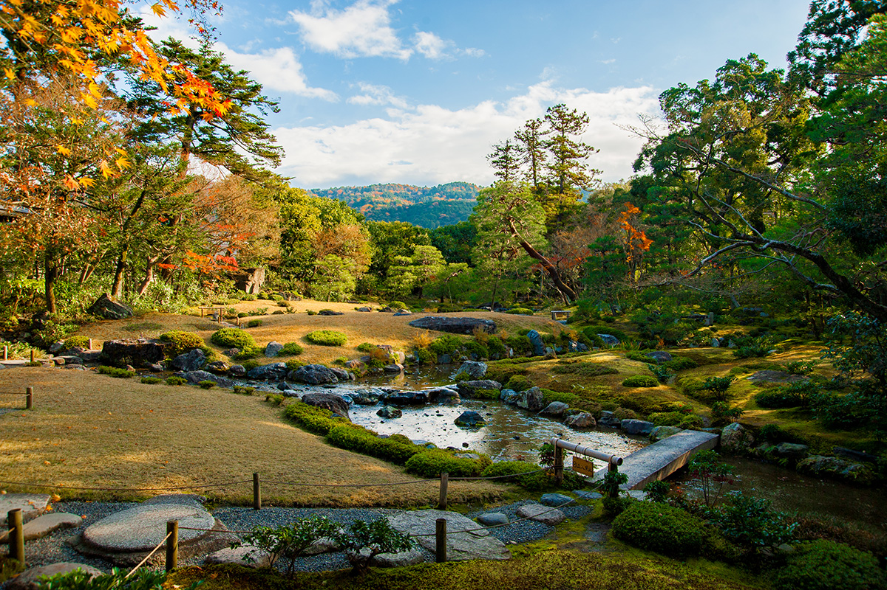
Осенью в Киото многое решает запись. В лучшие сады и на редкие показы в храмах пускают по времени и небольшими группами, зато тот, кто записался заранее, смотрит на камни и клёны без толпы.
Дом мастера
Музей-сад Мирэя Сигэмори
Мирэй Сигэмори (1896–1975) был самым известным садовником Японии XX века. Его узнают по смелым каменным композициям, сухим садам карэсансуй и мху, разбитому на чёткие геометрические участки. Он создал, например, сад вокруг главного зала храма Тофуку-дзи и сад малого храма Комё-ин.
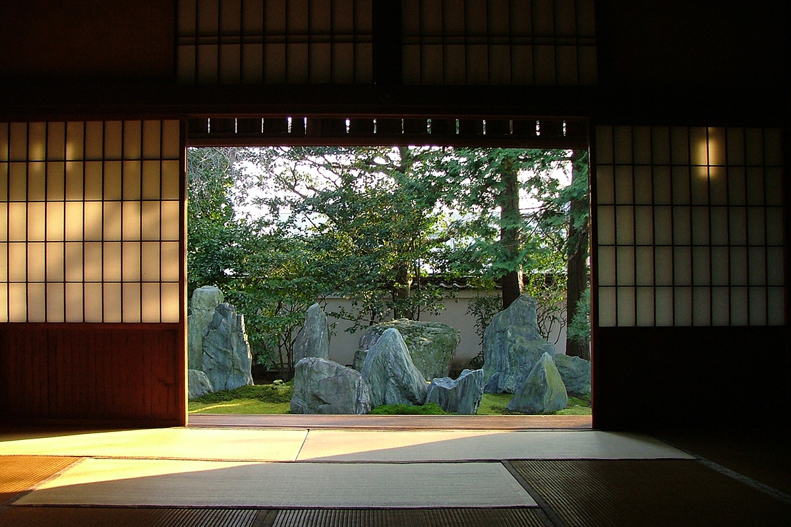
В 1943 году Сигэмори получил дом от одного из жрецов святилища Ёсида и прожил в нём до конца жизни. Часть дома построили ещё в эпоху Эдо, а в 1970 году хозяин сам спроектировал для себя чайную и новый сад. Сегодня кабинет с садом открыт как маленький частный музей, и старая архитектура, новые постройки и сад сложились здесь в одно целое.
Главный сад собран из голубых камней с красивым рисунком. Четыре острова стоят на поросших мхом холмиках, а вокруг них белый песок изображает море. Мысль, которая держит весь сад, видна в каждой детали. За ней стоят годы работы: Сигэмори объездил сады всей страны и изучал их, пока не увидел в старых садах молитву и духовный смысл, который японцы вкладывали в них веками. Его собственные работы стали современным прочтением этой традиции.
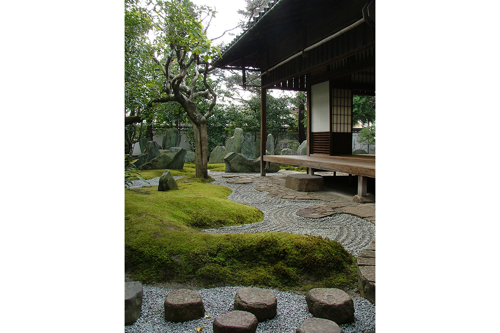
Его стиль называли «вечным модерном», и в собственном доме он проявился особенно ясно. Источником этой современности, как ни странно, была старая придворная культура.
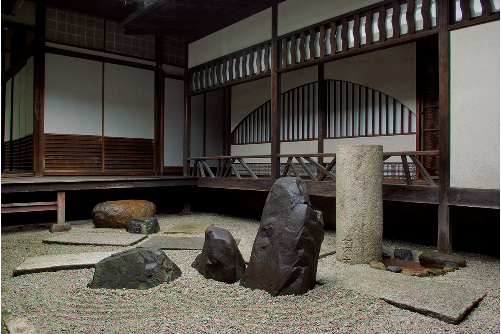
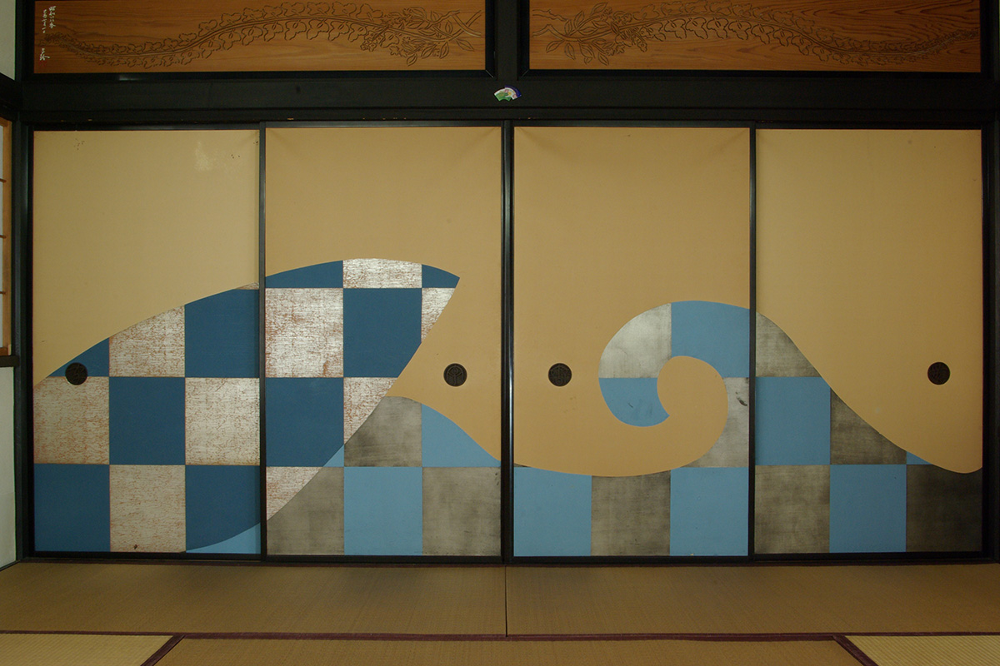
Музей-сад Мирэя Сигэмори
- Адрес
- префектура Киото, город Киото, район Сакё, Ёсида Камиодзи-тё, 34
- Телефон
- +81 75-761-8776
- Часы работы
- в 11:00 и 14:00, около часа, запись до 17:00 накануне
- Выходные
- понедельник, праздники
- Цены / Вход
- от 1 000 иен (зависит от сезона и программы)
Сад политика
Мурин-ан: вода из озера Бива
После революции Мэйдзи молодым правительством руководили политики, пришедшие на смену первым героям переворота. Среди них были Хиробуми Ито (1841–1909), первый премьер-министр Японии, и Аритомо Ямагата (1838–1922), который построил Мурин-ан.
Ямагата был жёстким политиком, но писал стихи вака и хорошо разбирался в садах. Его токийская резиденция известна сегодня как сад Тиндзансо. Виллу в Киото, рядом с храмом Нандзэн-дзи, он тоже строил ради сада. До тех пор в моде были символические сады, где пруд изображал море, а камни острова. Ямагата попросил другое: сад, похожий на обычный деревенский пейзаж у подножия гор.
Ручей в саду тоже его идея, и вода в нём идёт прямо из озера Бива. Ямагата как политик много сделал для строительства канала от озера Бива, большой стройки эпохи Мэйдзи, и провёл воду из канала в собственный сад. Её и сегодня подают так же, как тогда, по принципу сифона.
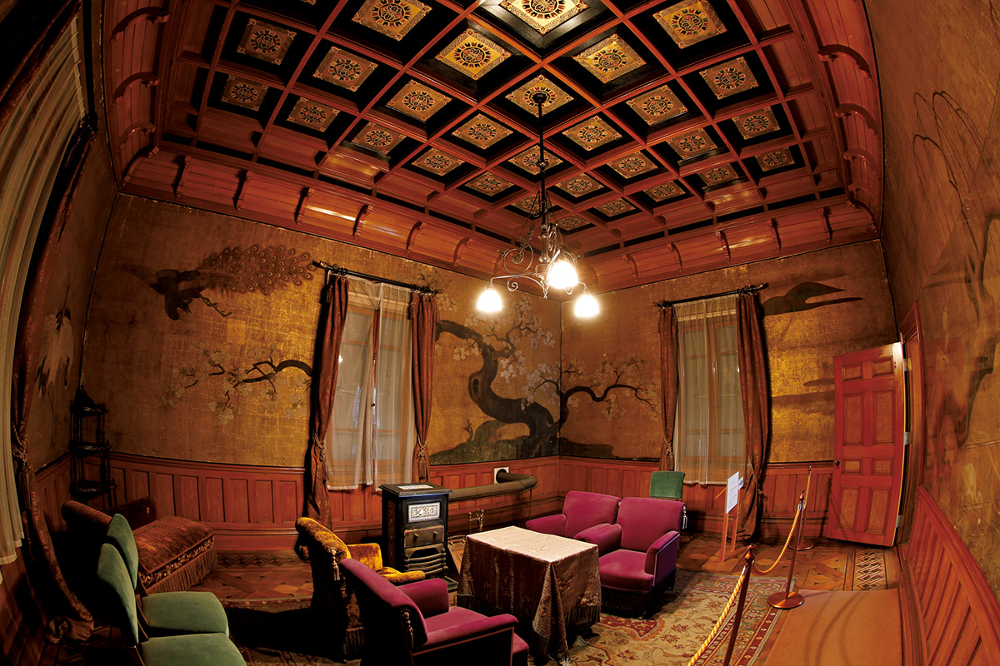
Мурин-ан поэтому не только красивый сад, но и место, где можно прикоснуться к истории страны. Главный дом построен из дерева в стиле сукия. Убранство в нём сведено к минимуму, и из комнат открывается вся панорама сада. В доме постоянно работает кафе, где подают маття.
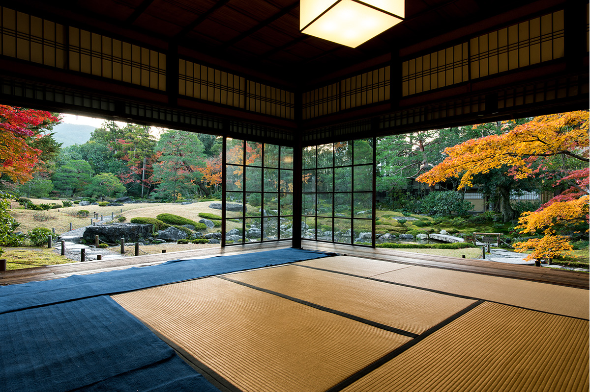
Сад Мурин-ан
- Адрес
- префектура Киото, город Киото, район Сакё, Нандзэндзи Кусагава-тё, 31
- Телефон
- +81 75-771-3909
- Часы работы
- 9:00–18:00, вход по записи на каждый час, при свободных местах можно без записи
- Цены / Вход
- билет 600 иен, с чаем 1 600 иен, с чаем и сувениром 2 200 иен
- Сайт
- murin-an.jp
В горах
Хакурюэн: сад, построенный своими руками
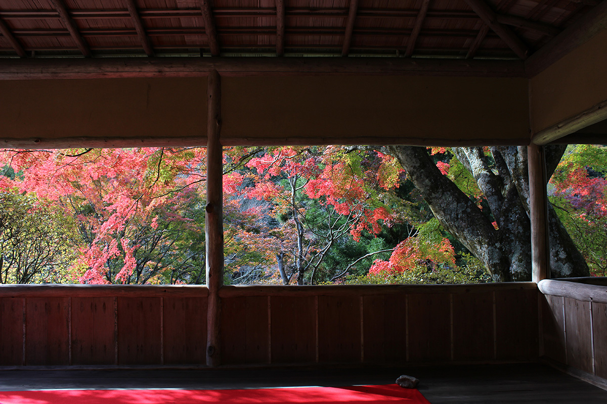
На севере Киото, у подножия горы Анъё-дзи в Ниносэ по дороге к Кураме, есть сад, который в Киото называют потаённым. Гору с азалиями издавна считали священной. Здесь почитали седого старца, дарующего долголетие, и белую змею, но со временем склоны заросли бамбуком и низким бамбуком куматасаса, и место пришло в запустение.
В 1962 году эту землю купил основатель старой киотской швейной компании. Его тронули местные предания и вера, и он решил посвятить жизнь тому, чтобы гора ожила. Профессиональных садовников не звали: сад строили сотрудники компании с семьями и помощники из окрестных деревень, то есть любители. Работа шла много лет, и впервые сад открыли для публики осенью 2012 года. С тех пор его показывают дважды в год, весной и осенью.
По саду разбросаны пять беседок, тоже сделанных своими руками. Каждая служит рамой: в ней сад и горы вокруг складываются в новую картину. Хакурюэн и сегодня бережно содержат вручную, и кажется, что горы в ответ на эту заботу каждую осень снова краснеют.
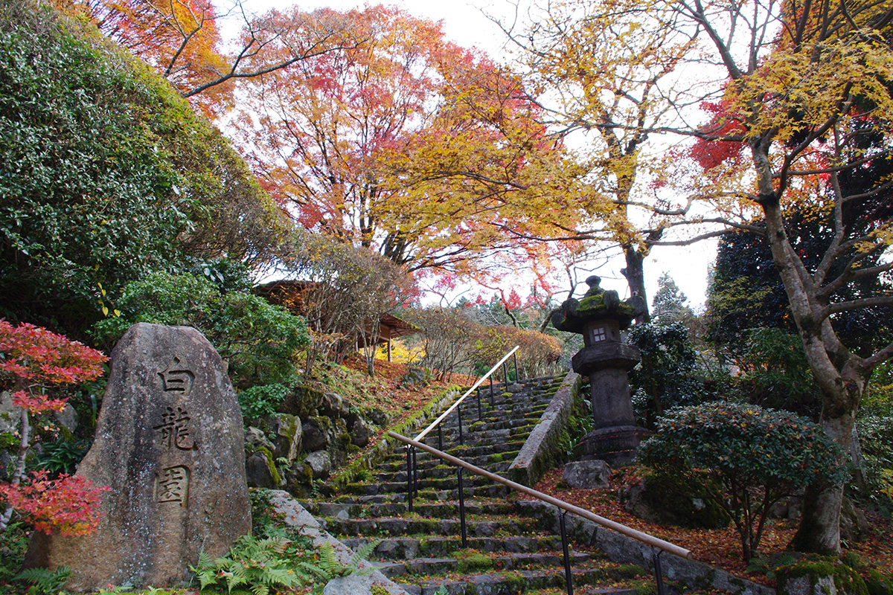
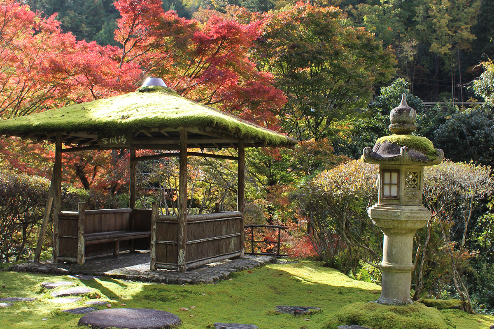
Сад Хакурюэн
- Адрес
- префектура Киото, город Киото, район Сакё, Курама Ниносэ-тё
- Даты
- только весной и осенью, по предварительной записи
Особые показы
Три храма, которые открывают не всегда
Кроме садов, осенью в Киото проходят особые показы: храмы открывают обычно закрытые залы, картины и сады, иногда утром до открытия ворот или вечером. Такие программы меняются из года в год. Ниже три показа осени 2021 года; повторяются ли они, лучше узнать в храме перед поездкой.
Тисяку-ин: чаепитие на храмовых дверях
Тисяку-ин, главный храм ветви Тисан школы Сингон, осенью 2021 года водил гостей по территории утром, до открытия ворот, с монахом в качестве гида. Главное в зале Синдэн это росписи раздвижных дверей работы Инсё Домото (1891–1975), одного из крупнейших художников японского модерна. Его «Женщины за чаем» 1958 года совсем не похожи на храмовую живопись: на них есть столы и стулья, и в них угадывается любовь Киото к кафе. В храме можно увидеть и пышные росписи Тохаку Хасэгавы (1539–1610), главного художника эпохи Момояма.
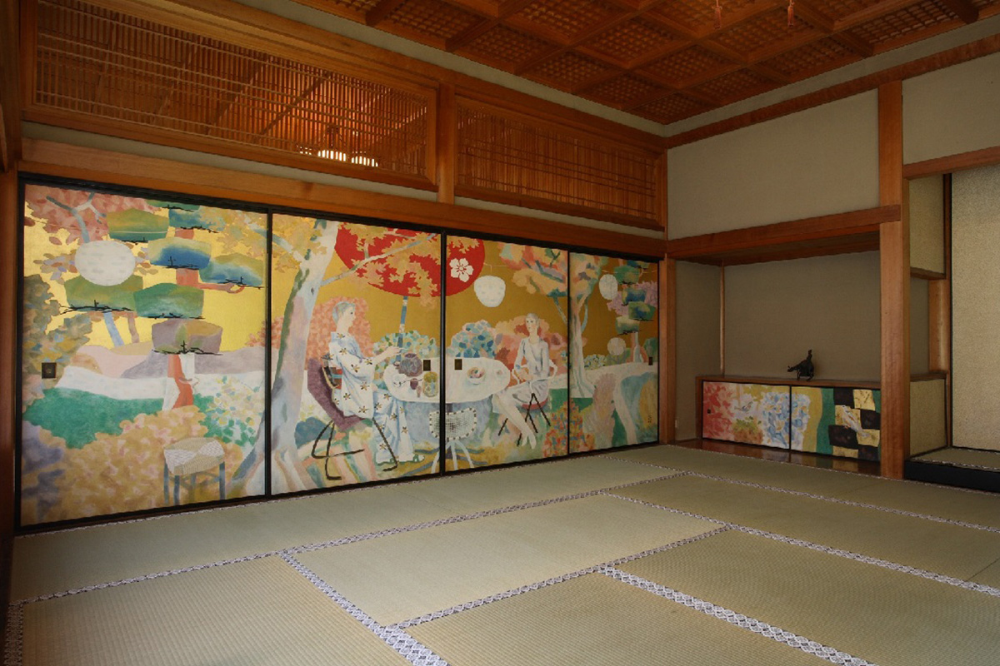
Сад храма разбит в начале эпохи Эдо, охраняется государством как живописное место и считается садом во вкусе Сэн-но Рикю. Ранним утром на него спокойно смотрят из комнат и с галереи. Программа 2021 года стоила 4 300 иен и шла около двух часов, а после неё в гостинице для паломников при храме подавали японский завтрак с жареной рыбой и омлетом.
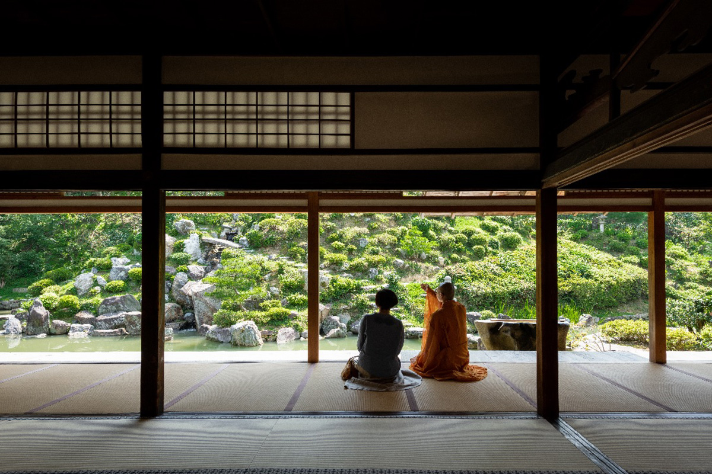
Храм Тисяку-ин
- Адрес
- префектура Киото, город Киото, район Хигасияма, Хигасикавара-мати, 964
- Телефон
- +81 75-541-5361
- Даты
- утренний показ шёл с 13 ноября 2021 года по 31 марта 2022 года в отдельные дни
- Цены / Вход
- 4 300 иен (2021 год, с завтраком)
Кэйсюн-ин: ночь в малом храме
Кэйсюн-ин, малый храм в монастыре Мёсин-дзи, основан в начале эпохи Эдо. Он известен чайной и садом в традиции Сэн-но Рикю. Сад охраняется как живописное место, а создателем его считают мастера, которому приписывают и сад императорской виллы Кацура. Осенью 2021 года храм устраивал вечерние показы: сад освещали совсем немного, ровно столько, чтобы ночью он оставался таинственным. Был вариант с ужином в коробке-бэнто от Kyoto Kitcho и живой придворной музыкой гагаку. С ужином программа стоила 23 000 иен, без ужина 12 000 иен.
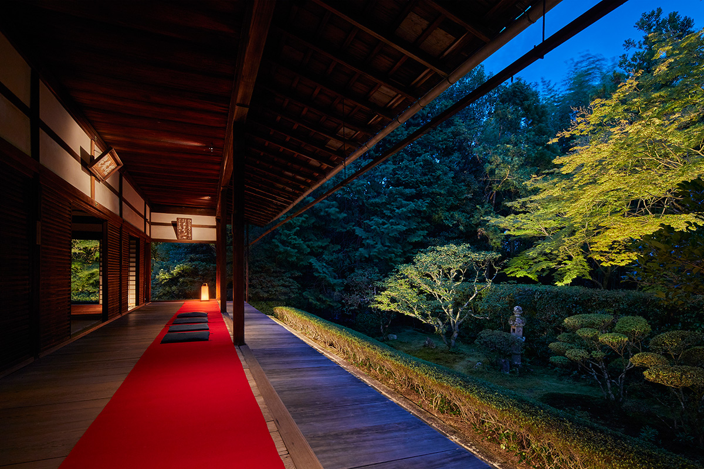
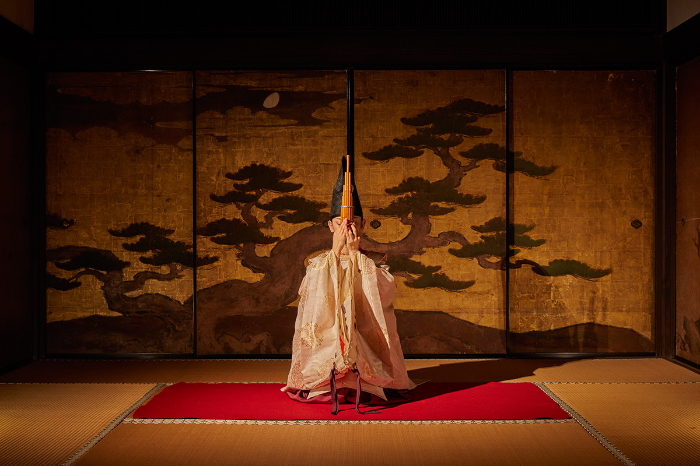
Храм Кэйсюн-ин
- Адрес
- префектура Киото, город Киото, район Укё, Ханадзоно Тэраноноти-тё, 11
- Телефон
- +81 75-231-7015 (организатор показов)
- Даты
- вечерние показы шли до 5 декабря 2021 года по пятницам, субботам, воскресеньям и праздникам
- Цены / Вход
- 23 000 иен с ужином, 12 000 иен без ужина (2021 год)
Синдзю-ан: старые двери вернулись
Синдзю-ан, малый храм монастыря Дайтоку-дзи, связан с Иккю Содзюном (1394–1481), дзэнским монахом, который нарушал все правила и стал героем множества историй. Когда старинные росписи раздвижных дверей отдали на реставрацию, в 2018 году храм впервые примерно за 400 лет заказал новые. Их написали современные художники, среди них известный мангака и арт-директор серии Final Fantasy, и об этом много говорили.
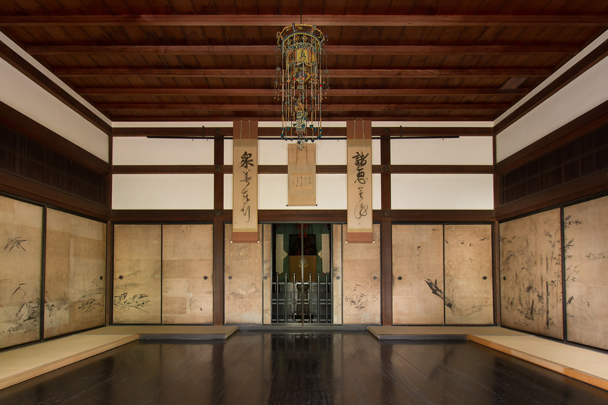
В 2021 году реставрация закончилась, и старые росписи вернулись на место. По этому случаю храм открыли до 5 декабря 2021 года, вход стоил 2 000 иен. Показывали работы Дасоку Соги (XV век) и Тохаку Хасэгавы, а в кабинете Цусэн-ин, который охраняется как важная культурная ценность, «Цветы и птицы» Мицуоки Тосы (1617–1691).
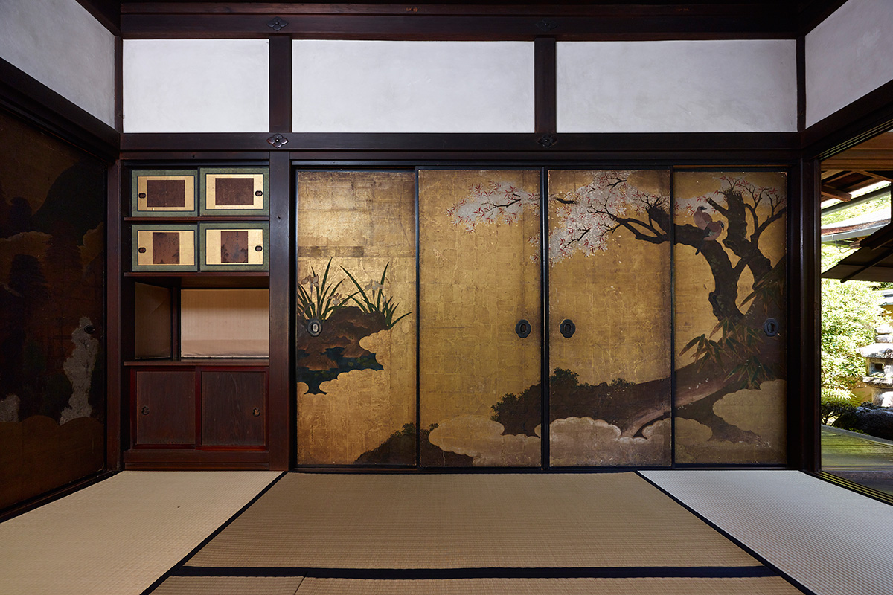
Храм Синдзю-ан
- Адрес
- префектура Киото, город Киото, район Кита, Мурасакино Дайтокудзи-тё, 52
- Телефон
- +81 75-231-7015 (организатор показов)
- Даты
- показ шёл до 5 декабря 2021 года, кроме сред и 4 ноября
- Цены / Вход
- 2 000 иен (2021 год)
Фото: Фумито Судзуки, Ueyakato.